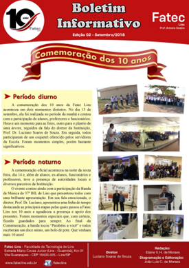

Sobre Mim
Olá, meu nome é Durval de Araujo. Sou um estudante de programação. Apaixonado por animais e pela natureza, nas horas vagas gosto de tirar fotos do nascer e por do sol.

Atualmente procuro melhorar minhas habilidades em programação. Estou fazendo cursos online e intensivos gratuitos, para poder aprender coisas novas e também para melhorar minhas habilidades.
Portfólio
Criação de Conteúdo para Web.
Prática de Desgin.
Acessibilidade na Internet.
Projeto de Navegação e Interação.
Tópicos Especiais em Sistemas para Internet II.
Tópicos Especiais em Sistemas para Internet III.
Trazendo os Boletins Informativos da FATEC Lins: Explorando Conceitos de Escrita para Web.
O trabalho proposto envolve a criação de uma página para exibir os boletins informativos da FATEC Lins, conforme mostrado na imagem 1, durante a disciplina de criação de conteúdo para web. A página criada deve abordar os conceitos discutidos no semestre de 2019, como escrita para web, uso de etiquetas de comunicação, planejamento do projeto de escrita, usabilidade focada no conteúdo, utilização da pirâmide invertida, estratificação de dados, redação e otimização para mecanismos de busca (SEO). Durante o desenvolvimento, todo o boletim informativo do site da FATEC Lins foi analisado, filtrando e selecionando as informações relevantes de acordo com as técnicas textuais ensinadas em sala de aula, para melhor adequação a cada projeto.

Acessibilidade na Internet: Garantindo a Igualdade de Acesso e Oportunidades para Todos
×
Acessibilidade na Internet refere-se à garantia de que todas as pessoas, incluindo aquelas com deficiência, possam utilizar e desfrutar plenamente da web. É um conceito que envolve a criação de sites e aplicativos acessíveis, que possam ser percebidos, compreendidos, navegados e interagidos por todas as pessoas, independentemente de suas habilidades ou limitações.Os criadores de conteúdo que desejam tornar seus sites mais acessíveis podem utilizar recursos de programação e ferramentas específicas para avaliar a acessibilidade. Isso permite identificar áreas que precisam ser melhoradas e garantir que o site atenda aos padrões de acessibilidade estabelecidos pela World Wide Web Consortium (W3C) e outras organizações relevantes.
Explorando o Desenvolvimento de Aplicativos Móveis com Apache Cordova: Uma Jornada Multiplataforma
×Neste capítulo do curso "Tópicos especiais em sistemas para Internet II", exploramos o desenvolvimento de aplicativos móveis utilizando o framework Apache Cordova. Através do uso de tecnologias web padrão, como HTML5, CSS3 e Javascript, aprendemos a estrutura básica para a criação de um aplicativo multiplataforma. O Apache Cordova oferece uma variedade de plugins que podem ser adicionados ao aplicativo, como Status Battery, Camera, Device, Dialogs, File e Geolocation. Através do arquivo Config.xml, é possível personalizar a configuração do aplicativo, incluindo ícones, nome e endereços. O LocalStorage é utilizado como uma opção de armazenamento de dados no navegador.
Progresso em Matérias
Algumas das materias da Faculdade, ainda não tenho experiência profissional com elas.